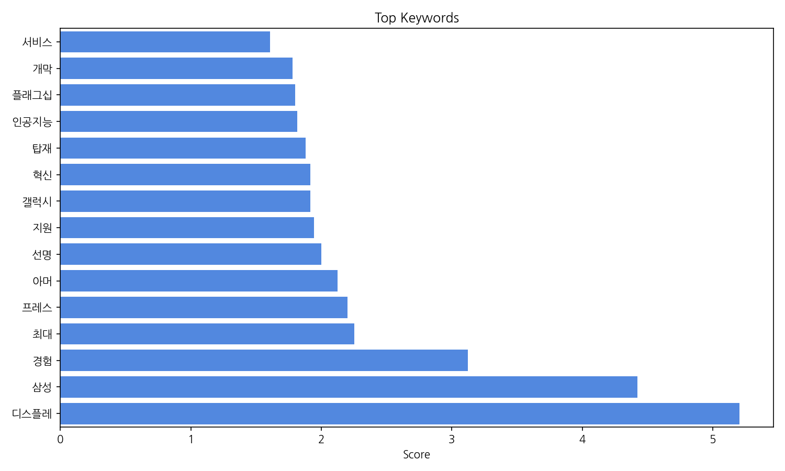
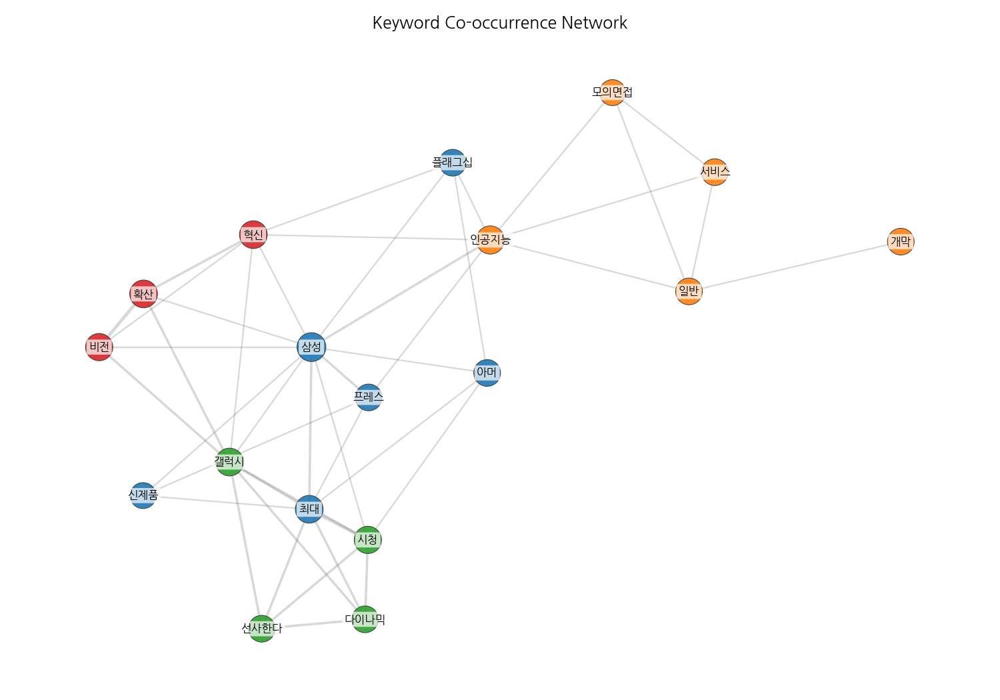
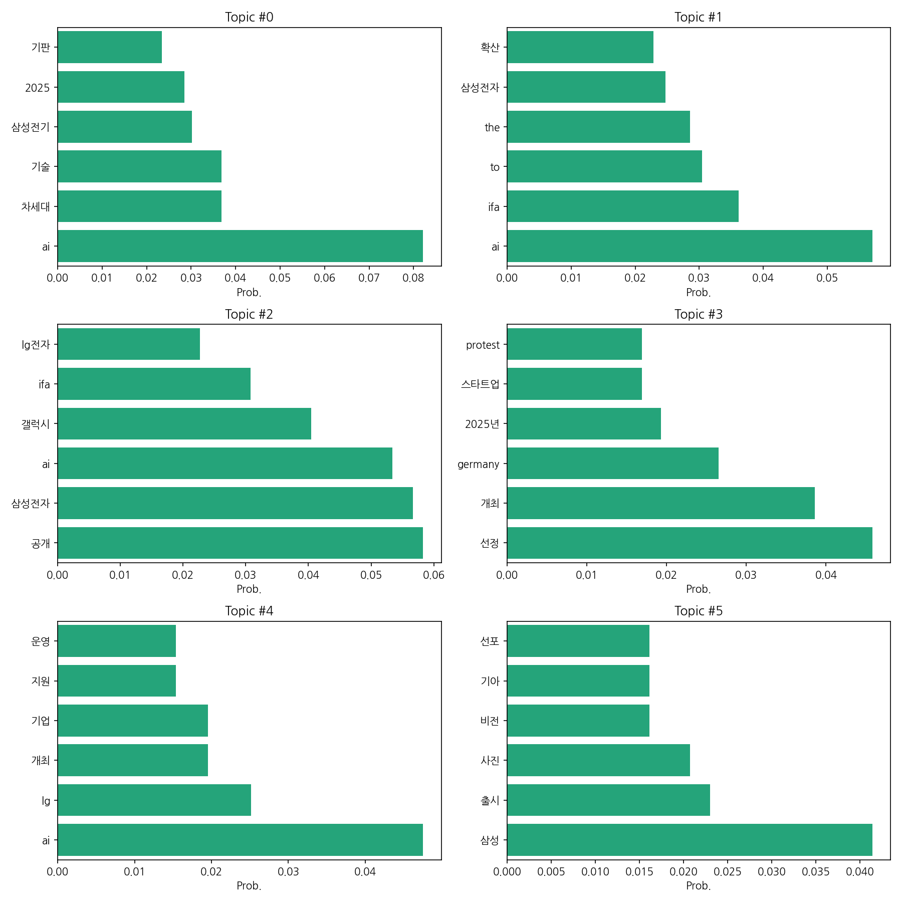
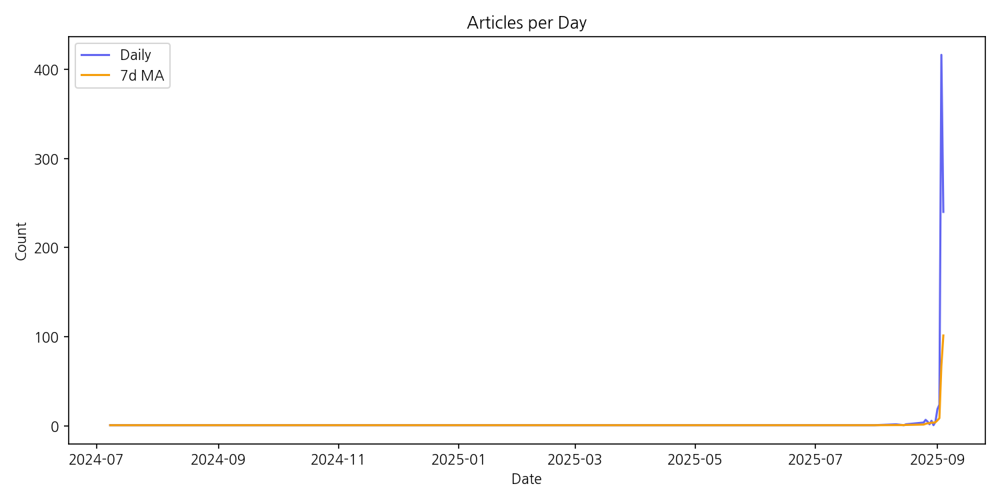

이번 기간 핵심 토픽과 키워드, 주요 시사점을 요약합니다.
핵심 맥락 설명: 제공된 데이터는 2025년을 중심으로 삼성전자와 LG전자의 AI 기술, 특히 IFA(국제가전박람회) 관련 소식과 차세대 기술(반도체, 기판 등)에 대한 뉴스 기사를 다루고 있습니다. 삼성과 LG의 AI 기술 경쟁과 2025년 시장 선점을 위한 전략, 그리고 관련 스타트업 생태계의 동향이 주요 내용입니다. 이는 한국 주요 기업들의 AI 기술 개발 및 시장 진출 전략, 그리고 글로벌 시장 경쟁 상황을 반영하고 있습니다.
최근 변화/스파이크: 2025년 9월 초에 뉴스 기사 수가 급증하는 현상(스파이크)을 보입니다. 이는 특정 시점에 삼성전자 또는 LG전자의 AI 관련 주요 발표나 IFA 2025 행사 개최 등의 이벤트가 있었음을 시사합니다.
실무 인사이트:
IFA 2025 관련 정보 수집 및 분석 강화: 9월 초 기사 급증을 고려하여 IFA 2025 행사 전후로 삼성전자와 LG전자의 AI 관련 발표 내용, 시장 반응, 경쟁사 동향 등을 면밀히 분석하여 시장 변화에 대한 빠른 대응 전략을 수립해야 합니다. 특히, 경쟁사의 전략과 기술 수준을 정확히 파악하는 것이 중요합니다.
| Rank | Keyword | Score |
|---|---|---|
| 1 | 디스플레 | 5.202 |
| 2 | 삼성 | 4.422 |
| 3 | 경험 | 3.124 |
| 4 | 최대 | 2.251 |
| 5 | 프레스 | 2.2 |
| 6 | 아머 | 2.123 |
| 7 | 선명 | 2.0 |
| 8 | 지원 | 1.945 |
| 9 | 갤럭시 | 1.918 |
| 10 | 혁신 | 1.914 |
| 11 | 탑재 | 1.879 |
| 12 | 인공지능 | 1.816 |
| 13 | 플래그십 | 1.798 |
| 14 | 개막 | 1.782 |
| 15 | 서비스 | 1.608 |




핵심 맥락 설명: 제공된 데이터는 2025년을 중심으로 삼성전자와 LG전자의 AI 기술, 특히 IFA(국제가전박람회) 관련 소식과 차세대 기술(반도체, 기판 등)에 대한 뉴스 기사를 다루고 있습니다. 삼성과 LG의 AI 기술 경쟁과 2025년 시장 선점을 위한 전략, 그리고 관련 스타트업 생태계의 동향이 주요 내용입니다. 이는 한국 주요 기업들의 AI 기술 개발 및 시장 진출 전략, 그리고 글로벌 시장 경쟁 상황을 반영하고 있습니다.
최근 변화/스파이크: 2025년 9월 초에 뉴스 기사 수가 급증하는 현상(스파이크)을 보입니다. 이는 특정 시점에 삼성전자 또는 LG전자의 AI 관련 주요 발표나 IFA 2025 행사 개최 등의 이벤트가 있었음을 시사합니다.
실무 인사이트:
IFA 2025 관련 정보 수집 및 분석 강화: 9월 초 기사 급증을 고려하여 IFA 2025 행사 전후로 삼성전자와 LG전자의 AI 관련 발표 내용, 시장 반응, 경쟁사 동향 등을 면밀히 분석하여 시장 변화에 대한 빠른 대응 전략을 수립해야 합니다. 특히, 경쟁사의 전략과 기술 수준을 정확히 파악하는 것이 중요합니다.
| Idea | Target | Value Prop | Score |
|---|---|---|---|
| IFA 2025 AI 기술 경쟁 분석 및 예측 서비스 | 삼성전자, LG전자 등 대기업 전략기획팀, 투자사, 시장조사기관 | IFA 2025를 중심으로 AI 기술 경쟁 동향을 실시간으로 분석하고, 경쟁사 전략 및 시장 트렌드를 예측하는 서비스를 제공합니다. 경쟁사 기술 분석, 시장 반응 예측, 최적 전략 제안 등을 통해 의사결정의 정확성을 높이고, 시장 기회 선점 및 리스크 최소화를 지원합니다. 기존 시장조사 서비스보다 정확하고 신속한 정보 제공을 통해 차별화된 가치를 제공합니다. | 3.8 |
| IFA 2025 AI 기술 경쟁 분석 및 예측 플랫폼 서비스 | 삼성전자, LG전자 등 대기업 AI 전략팀, 국내외 투자사, 시장조사기관 | IFA 2025 행사 전후 AI 기술 경쟁 동향을 실시간으로 분석하고 예측하는 플랫폼을 제공합니다. 경쟁사의 기술력, 시장 점유율, 투자 동향 등을 종합적으로 분석하여 시각화된 보고서를 제공하며, AI 기반 예측 모델을 통해 미래 시장 트렌드를 예측하여 효율적인 전략 수립을 지원합니다. 기존 시장조사 자료보다 정확하고 신속한 정보 제공으로 경쟁 우위를 확보할 수 있도록 돕습니다. | 3.8 |
| IFA 2025 AI 기술 경쟁 분석 및 예측 플랫폼 | 삼성전자, LG전자 등 대기업 전략기획팀, 국내외 투자사, 시장조사기관 | IFA 2025를 중심으로 삼성전자와 LG전자의 AI 기술 경쟁 현황을 실시간으로 분석하고, 향후 시장 트렌드를 예측하는 플랫폼입니다. 경쟁사 기술 분석, 시장 점유율 예측, 잠재적 위험 요소 분석 등을 제공하여 의사결정의 효율성을 높입니다. 기존 서비스 대비 정확도 높은 예측 모델과 시각화된 데이터 제공으로 경쟁 우위를 확보합니다. | 3.5 |